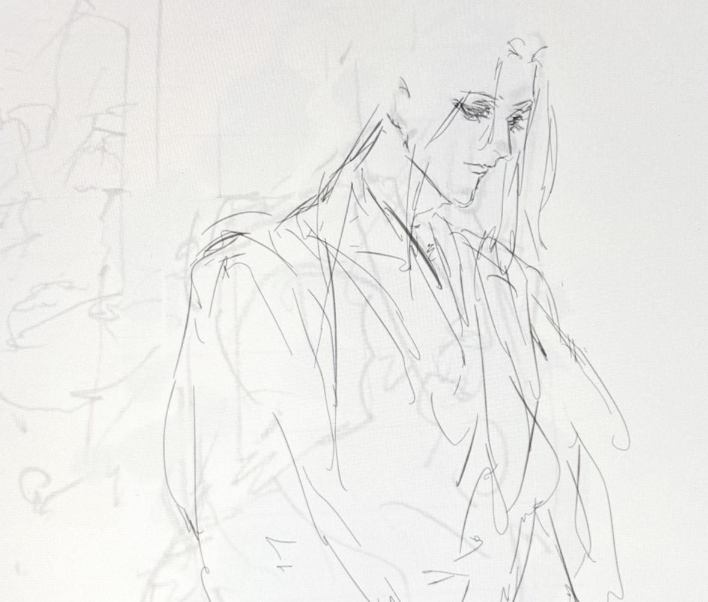
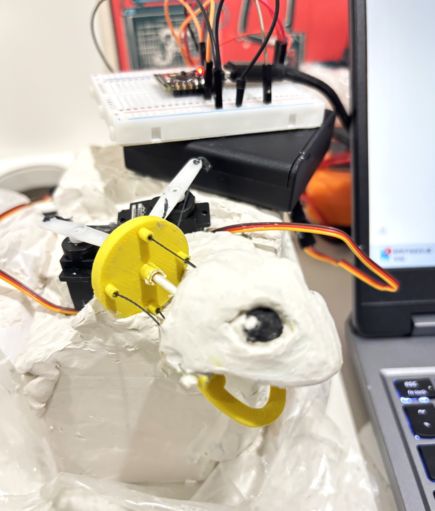

I am a student researcher focusing on the synergy between intelligent mechanical systems and human interaction. My work explores how biomimetic design can create more intuitive robotic interfaces.

A tendon-driven robotic system designed for expressive human-robot interaction. Utilizing Fusion 360 for mechanical kinematics and ESP32 for real-time control.

Exploring 4-bar linkage systems and their applications in bio-inspired joint mechanisms for enhanced mobility and energy efficiency.